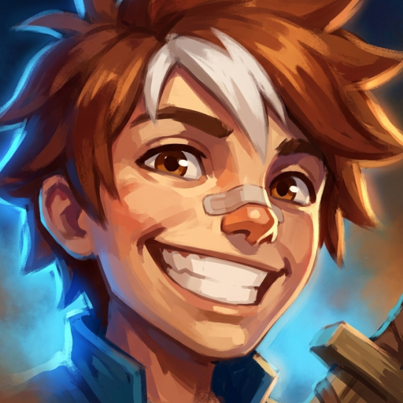
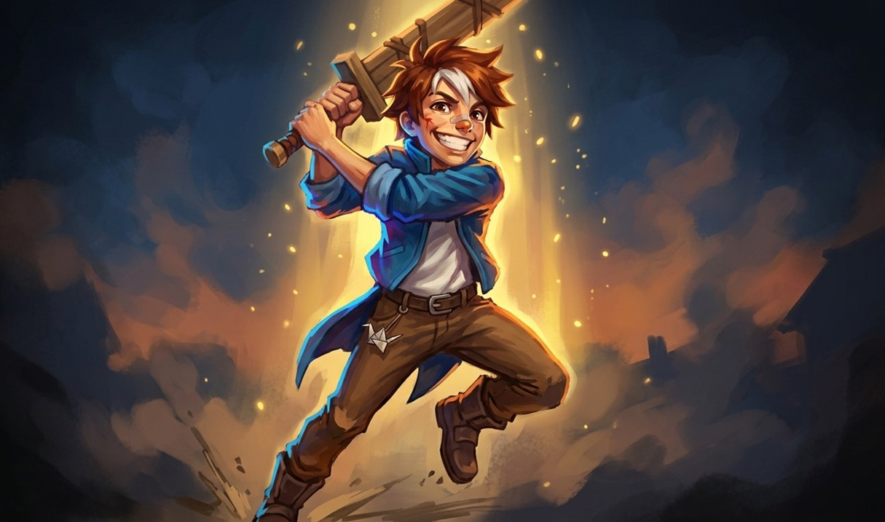

The kit
- P
Lessons Learned
You earn Lessons: 2 for a champion takedown, 1 for dying to a champion, 1 for an epic monster your team takes near you. Your training sword grows on them: Iron at 4 (+10 attack damage), Oak at 9 (+20 attack damage, +0.25m attack range), Steel at 15 (+35 attack damage, +0.5m attack range, basic attacks cleave 40% in a 90-degree 2.5m arc), and never later than levels 7, 12 and 17. Below Iron, basic attacks deal 8% less to champions. Practice Swing's second cut unlocks at Iron and its gold wave at Steel.
- Q
Practice Swing
Slash a 120-degree arc out to 2.75m for 55/90/125/160/195 (+100% bonus AD) physical damage. From Iron (level 6) a second cut follows for 40% on everything the first one hit. At Steel (level 16) a gold wave also runs 6m down the line for 60%.
- W
Paper Crane
Gain a shield of 60/90/120/150/180 (+10% max health) for 2.5s and 25% movement speed for 1.5s. If an enemy champion breaks the shield, Practice Swing comes off cooldown.
- E
Running Start
Dash 3.5m toward the cursor. The first enemy champion you pass is struck for 50/80/110/140/170 (+60% bonus AD) physical damage, and your next basic attack within 3s strikes twice.
- R
Borrowed Steel
For 6s your sword jumps one stage past its current one (at Steel it becomes Gold: +50 attack damage, +0.75m attack range, 60% cleave). Practice Swing throws its gold wave and its cooldown is halved, and each enemy champion hit by Practice Swing or Running Start extends the window by 0.5s (up to 3s). A takedown during it permanently grants +3 attack damage (up to 5 times).